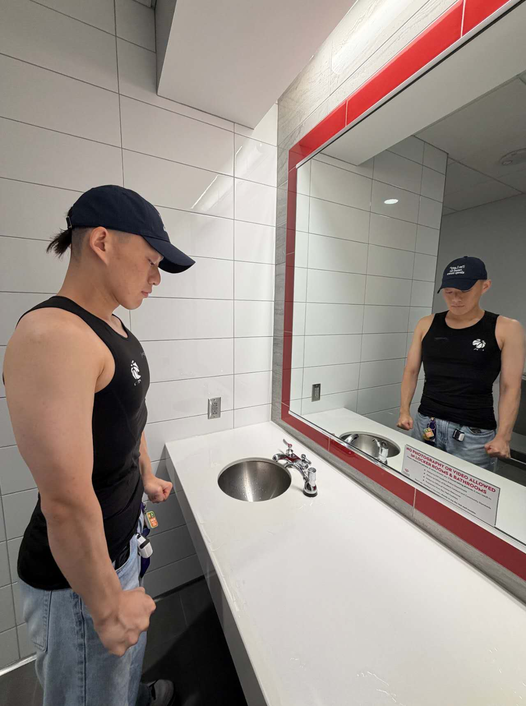

UNDERGRADUATE RESEARCHER · UW–MADISON · TRUSTWORTHY ML / BIOMEDICAL AI / MULTIMODAL SYSTEMS
本科科研 · 威斯康星大学麦迪逊分校 · 可信机器学习 / 生物医学AI / 多模态系统
I study reliable and efficient large-model systems, with a focus on uncertainty-aware evaluation, grounded multimodal medical AI, and temporal evidence reasoning. My current work includes MARIE, a co-first-author 3D CT report-generation manuscript in revision after the ACM Multimedia 2026 decision; GOING, a first-author TIST submission on training-free RAG robustness; a first-author TMLR manuscript in preparation on uncertainty evaluation for LLM-based recommendation; and ETGB, an uncertainty-aware proactive Video-LLM manuscript in preparation for KDD 2027. I also work on edit-based refinement for diffusion language models.
我研究可靠且高效的大模型系统，关注不确定性感知评估、证据约束的医学多模态AI与时序证据推理。当前工作包括：共同第一作者的MARIE（3D CT报告生成；ACM Multimedia 2026决定后修订中）、第一作者的免训练RAG鲁棒性工作GOING（TIST审稿中）、准备投递TMLR的LLM推荐系统不确定性评估手稿，以及准备投递KDD 2027的主动式Video-LLM手稿ETGB。我也在研究扩散语言模型的edit-based refinement。

MARIE routes sentence-level volumetric evidence, exposes committed evidence through an Evidence Dictionary, and audits generated claims for anatomical consistency. → In revision after the ACM Multimedia 2026 decision; co-first author
MARIE 对3D CT进行句子级体积证据路由，通过Evidence Dictionary约束生成，并审计解剖一致性。→ ACM Multimedia 2026决定后修订中；共同第一作者
I am developing ETGB, extending Response-G1 with structured evidence-condition alignment, scene-graph memory, query-conditioned retrieval, temporal aggregation, and uncertainty-aware readiness scoring. → Manuscript in preparation for KDD 2027
我正在开发ETGB，在Response-G1上扩展结构化证据-条件对齐、场景图记忆、query-conditioned retrieval、时序聚合与不确定性感知readiness scoring。→ 准备投递KDD 2027
At Tsinghua University, I am exploring edit-based refinement for masked diffusion language models, using replacement, deletion, and insertion operations to improve global sequence consistency.
在清华大学，我正在探索masked diffusion language model的edit-based refinement，用替换、删除、插入操作提升全局序列一致性。
My first-author work includes GOING for training-free RAG noise mitigation and a manuscript in preparation for TMLR on realistic evaluation of uncertainty quantification for LLM-based recommender systems.
我的第一作者工作包括免训练RAG噪声缓解框架GOING，以及一篇准备投递TMLR的LLM推荐系统不确定性量化真实评估手稿。
Research on reliable multimodal and large-model systems, including 3D CT report generation, RAG robustness, uncertainty evaluation, and proactive streaming video understanding. Key outputs include MARIE (co-first author; in revision after the ACM Multimedia 2026 decision), GOING (TIST, first author), a TMLR manuscript in preparation, and ETGB for KDD 2027.
研究可靠的多模态与大模型系统，包括3D CT报告生成、RAG鲁棒性、不确定性评估与主动式流式视频理解。核心成果包括MARIE（共同第一作者；ACM Multimedia 2026决定后修订中）、GOING（TIST，第一作者）、准备投递TMLR的手稿，以及准备投递KDD 2027的ETGB。
Exploring edit-based refinement for parallel masked diffusion language models, where full-sequence-conditioned replacement, deletion, and insertion operations improve sequence-level consistency under aggressive parallel decoding.
探索面向并行masked diffusion language model的edit-based refinement：通过全序列条件下的替换、删除、插入操作，在激进并行解码下提升序列级一致性。
Built high-throughput real-time data pipelines for HFT with Python and SQL. Managed a 10M RMB simulation system validating ML-based trend-tracking strategies under volatile market conditions.
用Python和SQL构建高吞吐实时数据管道用于高频交易；管理千万规模仿真系统，验证ML趋势跟踪策略。
Weekly office hours mentoring undergraduates in machine learning, statistics, and Python/R programming.
每周答疑，辅导本科生机器学习、统计学与Python/R。
Built a FastAPI backend for an AI-powered academic paper discovery platform with personalized recommendation, BERT keyword extraction, and a Mistral-7B + RAG “Ask Paper” assistant. Demonstrated multi-document Q&A over 10,000+ academic abstracts.
为AI学术论文发现平台构建FastAPI后端，支持个性化推荐、BERT关键词提取与Mistral-7B + RAG论文问答助手；在10,000+篇学术摘要上演示多文档问答。